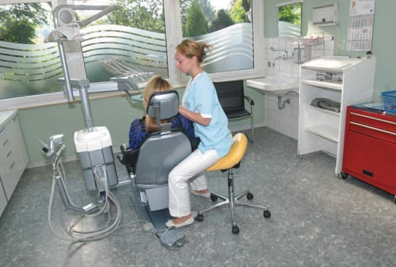
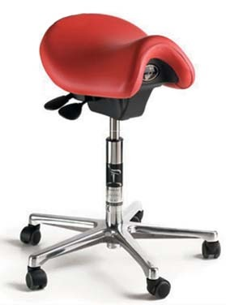
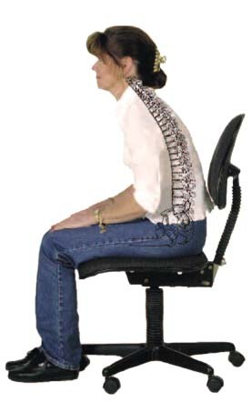
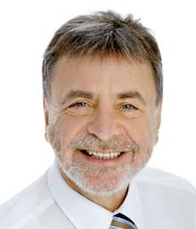
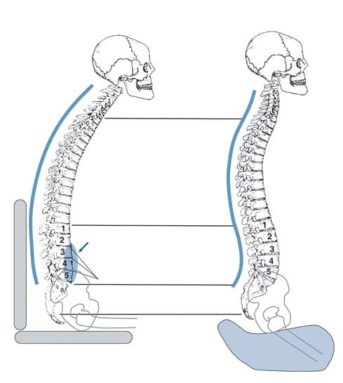
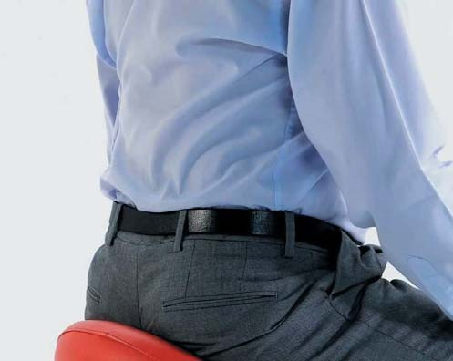
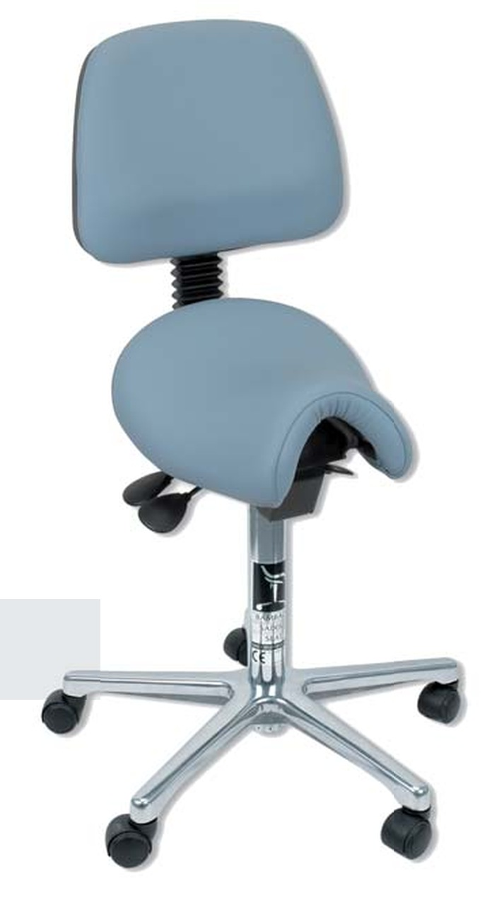
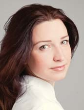

Bambach · журнал «ДентАрт» 2016 №1
Сядьте правильно, і ви позбудетеся болю в спині

Ідеальна поза завдяки стільцеві-сідлу Bambach Saddle Seat.
«Ні, — сказав мій ортопед, — не звинувачуйте у своїх болях спадковість». «Так, — сказала моя дружина, — я більше не хочу з'являтися на людях з таким сутулим чоловіком».
Мене завжди захоплювала постава вершників, чи то професійних учасників змагань з виїздки, чи юних красунь на недільній кінній прогулянці. Чому вони так прямо тримають спину? Вочевидь не тому, що це передбачено етикетом. Річ у сідлі. Читач може заперечити: «Це не так, Щасливчик Люк* завжди скакав на своєму коні, нахилившись до його шиї». Правильно, при бажанні навіть у сідлі можна зігнутися в три погибелі, от тільки це вимагатиме значних зусиль. Я ніколи не їздив на коні, але можу дещо розповісти про секрети ідеальної постави вершників.
Чому книга «Лікувальна гімнастика для хребта» така популярна серед стоматологів? Тому що біль у спині — їхня велика проблема, і його основна причина — неправильна поза при лікуванні пацієнтів. А в цьому не в останню чергу буває винен неправильно підібраний стілець. Я знаю, що кажу. Тридцять років стоматологічної практики залишили на моєму тілі невитравний слід: моє праве плече завжди опущене, і це має дуже кепський вигляд. І лише тепер, на схилку кар'єри, я знайшов те, що могло б запобігти усім цим проблемам, — стілець Bambach Saddle Seat. Можу лише підтвердити те, що написано в рекламному буклеті: він змінює наше життя.
Уже в 1960-х роках, коли стоматологи ще лікували пацієнтів стоячи, мій батько, інвалід, приробив до стоматологічної установки сидіння. Я погано пам'ятаю це сидіння, але що дивовижно, воно якраз і мало форму сідла. Так, ноги у батька були хворі, але ось на біль у спині й плечах він не скаржився ніколи.
Деякий час тому я отримав пропозицію випробувати стілець Bambach, і можу підтвердити, що Bambach Saddle Seat запобігає болю в спині й усуває його, істотно зменшуючи тиск на міжхребцеві диски і підтримуючи правильне положення тазу і хребта людини, що сидить на ньому. Стілець Bambach Saddle Seat випускається в кількох модифікаціях: зі спинкою, підлокітником або без жодних додаткових елементів — і це мій улюблений варіант.
Модель Cutaway — стілець із сильно вигнутим сидінням — підходить людям невисокого зросту і тендітної статури, особливо жінкам. Особисто мені дуже подобається хірургічний стілець, висоту якого можна регулювати за допомогою ножної педалі. Важлива подробиця — регулювати можна і нахил сидіння. Що вже казати про висоту стільця, котру людина будь-якого зросту може підігнати під себе!
Сидіння стільця покрите матеріалом, що дихає: недавно компанія Hager&Werken стала використовувати шкіру, якою обробляють крісла в дорогих німецьких автомобілях. Тепер штани більше не мокнуть від поту навіть під час тривалих процедур. Стільці випускаються будь-яких забарвлень, які можна підібрати в тон оформлення кабінету.


Mary Gale, австралійський фахівець з професійних захворювань і винахідниця стільця Bambach Saddle Seat, вивчала поставу вершників і питання про те, як люди, прикуті до інвалідного крісла, можуть спокійно сидіти в сідлі без додаткової підтримки і чому жокеї, які страждають від болю в спині, миттєво позбавляються від нього, ледь опинившись верхи на коні. Подробиці розкривати не буду: ви самі можете дізнатися про них з книги і буклета, присвячених стільцеві Bambach. Не забудьте замовити безкоштовну літературу і демонстрацію стільця в компанії Hager&Werken (info@bambach.ru).
Багато пенсіонерів, які могли б жити активним життям, сьогодні не здатні навіть поворухнутися через біль у спині, і все тому, що довго працювали в неправильній позі. Ви мрієте про таке майбутнє? Ні? Тоді сядьте правильно. На стілець-сідло Bambach Saddle Seat.

Ганс Х. Зельман
*Персонаж серії коміксів і фільмів за її мотивами. — Прим. перекладача.
Болі в спині — страждання стоматологів!
Понад 80% населення відчуває болі в спині, третина з них — хронічні. Вони є причиною понад 20% усіх відсутностей на роботі. Не дивно, що медичні страхові компанії говорять про «епідемію»: їхні витрати через проблеми з хребтом — близько 5-6 млрд євро. Причини цього можуть бути різні, але звички працівників є основною причиною дегенеративних проблем зі спиною. Особливо страждають ті, чий хребет внаслідок професійного навантаження піддається стисканню в сидячому положенні — таке навантаження надзвичайно виражене у всіх, хто працює на стоматологічному прийомі.
Стілець — ворог хребта?
Сучасна людина в середньому проводить сидячи 70% дня — протягом життя понад 100000 годин! Найвище навантаження відчувають ті, хто під час сидіння змушений часто прогинатися назад і виконувати екстремальні повороти, як, наприклад, при роботі у стоматологічній практиці. Дослідження засвідчили, що при нахилі сидіння міжхребцеві диски відчувають напругу, як при піднятті важких предметів. Якщо узяти тиск на міжхребцеві диски в положенні стоячи за 100%, то тиск у положенні лежачи зменшується до 20%, але збільшується до 120-140% при звичайному положенні сидячи і більш ніж на 200% — при сидінні прямо в зігнутій позі. А напруга в спині при сидінні на стільці Bambach Saddle відповідає напрузі, яку хребет відчуває у стоячій позі.

ПРОБЛЕМНА ЗОНА ХРЕБТА: шийний (7 хребців), грудний (12 хребців), поперековий (5 хребців), крижовий, куприковий відділи.

Хребет — це гнучка вісь нашого тіла. Хребетний стовп складається з 24 окремих хребців та міжхребцевих дисків, які їх з'єднують. Міжхребцеві диски — біологічні амортизатори, які виконують такі функції: по-перше, вони пов'язують хребці між собою, по-друге, виконують роль напівсуглоба, допускаючи невеликий обсяг рухів у межах одного сегмента, по-третє, гасять навантаження, які завжди сприймаються хребтом, перетворюючи їх з вертикальних на горизонтальні. Міжхребцеві диски — найслабша ланка хребетного стовпа, їх еластичність і функціональність з віком знижуються — це природне зношування посилюється через постійне неправильне навантаження на хребет, наприклад сидячи, особливо у викривленому положенні.
Хребет з його подвійним S-подібним вигином погано витримує постійне розтягнення. При відхиленні тазу назад поперекові хребці притискаються один до одного, збільшуючи тиск на міжхребцеві диски нерівномірно, штовхаючи його м'яке ядро назад, і хребет деформується. Одночасно м'язи спини розслаблені непропорційно і неспроможні ефективно підтримувати хребет. Результат — болі в спині, напруга в поперековому та шийному відділах і т.д.
Ідея стільця-сідла Bambach Saddle

Ідея стільця-сідла Bambach полягає в сидінні верхи, як при верховій їзді. У цій позі у сидячого з'являється правильна постава, оскільки зберігаються природні вигини хребта.
У такому положенні на стільці-сідлі Bambach Saddle вага тіла утримується таким чином, що анатомічно вивірена опорна поверхня сідла забезпечить ідеальні умови розподілу сили тяжіння в місцях контакту тіла з опорною поверхнею. Той, хто сидить, балансує таким чином, що динаміка роботи тіла буде такою ж самою, як у положенні стоячи, з тією лише різницею, що ноги розвантажені і залучені до мікрорухів, котрі підтримують природну рівновагу як противаги, а не як опори.
У результаті багаторічної роботи з Bambach було знайдено ідеальний нахил сідла, який є природним і правильним для спини в положенні сидячи. Таз при такому положенні злегка нахилений уперед, стегна зігнуті під кутом 45° щодо осі тулуба, природна форма поперекового відділу хребта зберігається, а тиск на міжхребцеві диски мінімальний. Як результат — ідеально збалансована і зручна позиція.
Обов'язкова фізична активність і правильний підхід до положення тіла під час роботи допоможуть стоматологові зберегти загальне фізичне і психічне благополуччя, а вашу поставу зроблять королівською. Положення без перенапруги дозволить вашим спині, шиї і плечам залишатися розслабленими, поліпшить кровообіг у ногах. Стілець-сідло Bambach забезпечить максимальну рухливість під час тривалого статичного положення при сидінні. А десятки тисяч захоплених користувачів стільця-сідла Bambach Saddle по всьому світу — переконливий доказ його ефективності.

Ксенія Лазарєва